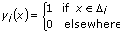

Histogram VI
Owning Palette: Probability & Statistics VIs
Requires: Base Development System
Finds the discrete histogram of the input sequence X.
 Add to the block diagram Add to the block diagram |
 Find on the palette Find on the palette |
Owning Palette: Probability & Statistics VIs
Requires: Base Development System
Finds the discrete histogram of the input sequence X.
| Add to the block diagram |
Find on the palette |
 |
X must contain at least one sample. If X is empty, the histogram is undefined, and the VI sets Histogram: h(x) and X Values to empty arrays and returns an error. |
 |
intervals specifies the number of intervals, or bins, to use in the histogram and must be greater than 0. If intervals is less than or equal to 0, the histogram is undefined, and the VI sets Histogram: h(X) and X Values to empty arrays and returns an error. The default is 10. |
 |
Histogram Graph displays the bar graph of the histogram of the input sequence X. The y-axis is the histogram count, and the x-axis is the histogram center values of the intervals (bins) of the histogram. |
 |
Histogram: h(x) is the discrete histogram of the input sequence X. |
 |
X Values is an array of the center values of the interval (bin) of the histogram. |
 |
error returns any error or warning from the VI. You can wire error to the Error Cluster From Error Code VI to convert the error code or warning into an error cluster. |
The histogram is a frequency count of the number of times that a specified interval occurs in the input sequence. The width of the frequency bin is
delta_x = (max–min)/m
where m is the requested number of bins. The centers of each bin are set according to the following equation:
center[i] = min + delta_x/2 + i * delta_x.
Example
If the input sequence is
X = {0, 1, 3, 3, 4, 4, 4, 5, 5, 8}
then the Histogram: h(x) of X for eight intervals is
h(X) = {h0, h1, h2, h3, h4, h5, h6, h7} = {1, 1, 0, 2, 3, 2, 0, 1}
Notice that the histogram of the input sequence X is a function of X.
The VI calculates Histogram: h(x) as follows. The VI scans the input sequence X to determine the range of values in it. Then the VI establishes the interval width,  x, according to the specified number of intervals,
x, according to the specified number of intervals,
where max is the maximum value found in the input sequence X, min is the minimum value found in the input sequence X, and m is the specified number of intervals.
Let  represent the output sequence X Values, because the histogram is a function of X. The VI evaluates elements of c using
represent the output sequence X Values, because the histogram is a function of X. The VI evaluates elements of c using
i = min + 0.5x + ix
for i = 0, 1, 2, …, m – 1
The VI defines the ith interval to be the range of values from up to but not including,
i (i – 0.5x, i + 0.5x)
for i = 0, 1, 2, …, m – 1
and defines the function to be

The function has unity value if the value of x falls within the specified interval. Otherwise it is zero. Notice that the interval i is centered about i, and its width is x.
The last interval, m–1, is defined. In other words, if a value is equal to max, it is counted as belonging to the last interval.
Finally, the VI evaluates the histogram sequence H using
where hi represents the elements of the output sequence Histogram: h(x), and n is the number of elements in the input sequence X.
Refer to the following VIs for examples of using the Histogram VI:
 Open example Find related examples
Open example Find related examples
Open example Find related examples
Open example Find related examples